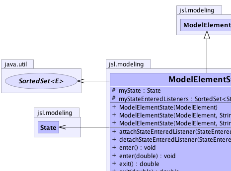
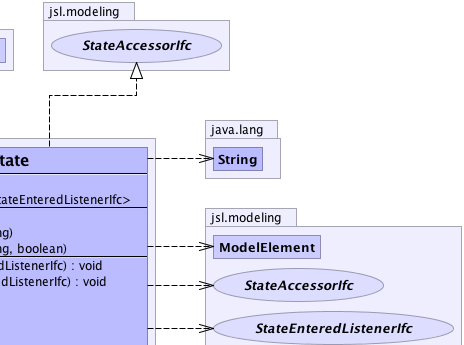
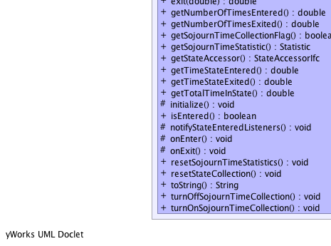
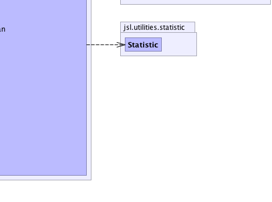

jsl.modeling.ModelElement
jsl.modeling.ModelElementState
jsl.modeling.ModelElement
jsl.modeling.ModelElementState
|
||||||||||
| PREV CLASS NEXT CLASS | FRAMES NO FRAMES | |||||||||
| SUMMARY: NESTED | FIELD | CONSTR | METHOD | DETAIL: FIELD | CONSTR | METHOD | |||||||||
java.lang.Object
public class ModelElementState
ModelElementState models a state that can be entered and exited with statistics tabulated. It represents a "permanent" state as it is part of the model element hierarchy.
|  |  |
|  |  |
| Nested Class Summary |
|---|
| Nested classes/interfaces inherited from class jsl.modeling.ModelElement |
|---|
ModelElement.TimedUpdateEventAction, ModelElement.WarmUpEventAction |
| Field Summary | |
|---|---|
protected State |
myState
|
protected java.util.SortedSet<StateEnteredListenerIfc> |
myStateEnteredListeners
|
| Constructor Summary | |
|---|---|
ModelElementState(ModelElement parent)
|
|
ModelElementState(ModelElement parent,
java.lang.String name)
|
|
ModelElementState(ModelElement parent,
java.lang.String name,
boolean useStatistic)
|
|
| Method Summary | |
|---|---|
void |
attachStateEnteredListener(StateEnteredListenerIfc listener)
|
void |
detachStateEnteredListener(StateEnteredListenerIfc listener)
|
void |
enter()
Causes the state to be entered at the current simulation time |
void |
enter(double time)
Causes the state to be entered with the time entered set to the supplied value |
double |
exit()
Causes the state to be exited at the current simulation time |
double |
exit(double time)
Causes the state to be exited with the time exited recorded as the supplied time |
double |
getNumberOfTimesEntered()
Gets the number of times the state was entered |
double |
getNumberOfTimesExited()
Gets the number of times the state was exited |
boolean |
getSojournTimeCollectionFlag()
Indicates whether or not statistics should be collected on the sojourn times within the state |
Statistic |
getSojournTimeStatistic()
Gets a statistic that collected sojourn times |
StateAccessorIfc |
getStateAccessor()
Allows the accumulated state information to be accessed |
double |
getTimeStateEntered()
Gets the time that the state was last entered |
double |
getTimeStateExited()
Gets the time that the state was last exited |
double |
getTotalTimeInState()
Gets the total time spent in the state |
protected void |
initialize()
This method should be overridden by subclasses that need actions performed to initialize prior to a replication. |
boolean |
isEntered()
Gets whether or not the state has been entered |
protected void |
notifyStateEnteredListeners()
|
protected void |
onEnter()
can be overwritten by subclasses to perform work when the state is entered |
protected void |
onExit()
can be overwritten by subclasses to perform work when the state is exited |
void |
resetSojournTimeStatistics()
Resets the statistics collected on the sojourn time in the state |
void |
resetStateCollection()
Resets the counters for the number of times a state was entered, exited, and the total time spent in the state |
java.lang.String |
toString()
Returns the name of the class and the model element's name. |
void |
turnOffSojournTimeCollection()
Turns off statistical collection of the sojourn times in the state |
void |
turnOnSojournTimeCollection()
Turns on statistical collection for the sojourn time in the state |
| Methods inherited from class java.lang.Object |
|---|
clone, equals, finalize, getClass, hashCode, notify, notifyAll, wait, wait, wait |
| Methods inherited from interface jsl.utilities.IdentityIfc |
|---|
getId, getName |
| Field Detail |
|---|
protected State myState
protected java.util.SortedSet<StateEnteredListenerIfc> myStateEnteredListeners
| Constructor Detail |
|---|
public ModelElementState(ModelElement parent)
public ModelElementState(ModelElement parent,
java.lang.String name)
public ModelElementState(ModelElement parent,
java.lang.String name,
boolean useStatistic)
| Method Detail |
|---|
public void attachStateEnteredListener(StateEnteredListenerIfc listener)
public void detachStateEnteredListener(StateEnteredListenerIfc listener)
protected void notifyStateEnteredListeners()
public final StateAccessorIfc getStateAccessor()
public final void enter()
public final void enter(double time)
time - public final double exit()
public final double exit(double time)
time -
public final boolean getSojournTimeCollectionFlag()
public final void turnOnSojournTimeCollection()
public final void turnOffSojournTimeCollection()
public final void resetSojournTimeStatistics()
public final void resetStateCollection()
public final double getNumberOfTimesEntered()
StateAccessorIfc
getNumberOfTimesEntered in interface StateAccessorIfcpublic final double getNumberOfTimesExited()
StateAccessorIfc
getNumberOfTimesExited in interface StateAccessorIfcpublic final Statistic getSojournTimeStatistic()
StateAccessorIfc
getSojournTimeStatistic in interface StateAccessorIfcpublic final double getTimeStateEntered()
StateAccessorIfc
getTimeStateEntered in interface StateAccessorIfcpublic final double getTimeStateExited()
StateAccessorIfc
getTimeStateExited in interface StateAccessorIfcpublic final double getTotalTimeInState()
StateAccessorIfc
getTotalTimeInState in interface StateAccessorIfcpublic final boolean isEntered()
StateAccessorIfc
isEntered in interface StateAccessorIfcpublic java.lang.String toString()
ModelElement
toString in class ModelElementprotected void initialize()
ModelElement
initialize in class ModelElementprotected void onEnter()
protected void onExit()
|
||||||||||
| PREV CLASS NEXT CLASS | FRAMES NO FRAMES | |||||||||
| SUMMARY: NESTED | FIELD | CONSTR | METHOD | DETAIL: FIELD | CONSTR | METHOD | |||||||||